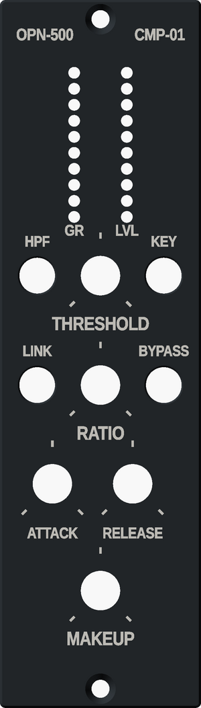

Practical
Printing the faceplate
A faceplate for an ordinary FDM printer, for when there is no laser cutter, CNC
or panel shop to hand. It has the same holes and legend as the toggle layout, so it
fits the front board as drawn.

The files
Everything is in panel/print/ in the compressor repository.
| File | What it is |
|---|---|
faceplate-multicolor.3mf | Panel and legend as one object with two parts, for a two-colour print in Bambu Studio or OrcaSlicer |
faceplate-multicolor-prusaslicer.3mf | The same for PrusaSlicer, which keeps its part table in a different place |
faceplate.stl | The faceplate on its own, already face down for printing |
faceplate-legend.stl | The engraved legend and pot ticks as their own body, for a second colour |
faceplate-fit-test.stl and its 3MFs | A 27 mm strip across THRESHOLD, HPF, KEY and the bottom of both meters, to print first |
faceplate.scad | The OpenSCAD model. Every print setting is a parameter at the top |
panel_data.scad | Hole positions and legend text, written by panel/make_panel.py from the same source as the DXF. Don’t edit it by hand |
build.sh | Rebuilds the STLs and 3MFs from the model (a few minutes) |
How it differs from the metal panel
- 3.2 mm thick, the same as a 1/8″ metal panel, so the rack screws and everything behind the panel sit where the front board expects. The back is flat.
- Pot wells. Each pot hole has a 12.5 mm counterbore on the front, 1.2 mm deep, leaving 2.0 mm of plastic under the nut. That gives the 9 mm pots’ short bushing about 3 mm of thread, which the metal panel only gets by being thinned round the pots. The 11 mm knobs sit over the wells.
- Holes print oversize on purpose. Pot, toggle and screw holes come out
0.2 mm larger than drawn (
hole_comp), because FDM holes shrink. The meter holes stay 2.2 mm: they only let light out, and keeping them small leaves 0.8 mm of plastic between neighbours. - 37.8 × 132.6 mm rather than the nominal 38.10 × 133.35, so it slides in beside the next module. The front edge has a 0.4 mm chamfer so first-layer squish doesn’t flare it.
- The legend is engraved 0.4 mm deep and drawn 30% larger than on the mockup, whose 1.4–1.7 mm capitals are too fine for a 0.4 mm nozzle. Each pot gets three ticks: start, middle and end of travel.
Printing it
- Print the fit test first. Check that a pot and a toggle drop through their
holes, the pot nut sits inside its well, and the LEDs line up behind the meter holes. If a
hole is tight or loose, change
hole_compinfaceplate.scadand rebuild (or use OpenSCAD’s Customizer). - Material: PETG in black or dark grey. A light colour lets each meter LED glow through the thin walls beside its hole, and PLA slowly gives way under a tightened nut in a warm rack.
- Settings: 0.4 mm nozzle, 0.2 mm layers, 4 walls, 100% infill, no supports. Print it as exported, face down; a textured PEI sheet gives the front a good finish.
- Two colours (optional): in Bambu Studio or OrcaSlicer, import
faceplate-multicolor.3mfwith File, Import (Cmd/Ctrl+I); in PrusaSlicer use the-prusaslicerversion. It loads as one object with two parts already lined up, the panel on filament 1 and the legend on filament 2. The file has no print settings in it, so Bambu Studio says it is loading geometry only; that is expected. The colours only swap on the first two layers, but it still needs a multicolour unit (AMS, MMU) or a second nozzle. - One colour: print
faceplate.stland fill the engraving afterwards with paint, or a white wax crayon rubbed in and wiped off.
Fitting it
- Snap the small anti-rotation tab off the front of each pot, as you would for a metal panel, or it holds the pot off the back of the panel.
- Tighten the nuts gently. Plastic creeps, and the nuts only need to hold the board.
Not solved yet
- Grounding. A plastic panel doesn’t ground the pot and toggle
bushings the way a metal panel tied to
CHASSISdoes. If touching a knob adds hum, run a wire from a solder tag under one toggle’s nut to the main board’sH2. - The main board’s bracket. The L-bracket that holds the main board (see the boards) is meant to bolt to a metal panel. How it fixes to a printed one, and whether the plastic holds up, hasn’t been modelled or tried.